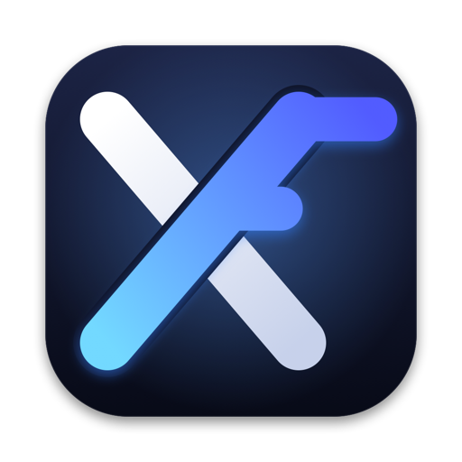

Native on Apple silicon
arm64 Wine runs Windows on your Mac directly, and FEX translates x86 and x64 game code to arm64 just in time. No virtual machine, no Rosetta.

crossfreecrossfree is a free, open-source game launcher for Apple silicon. Install Steam, Epic Games, GOG and more in one click, and play on native arm64 Wine + FEX: no virtual machine, no Rosetta.
Free and open source (MIT) · macOS 26.4 or later · Apple silicon (M1 or later)

Everything a CrossOver or Whisky user needs to play Windows games on Apple silicon, without managing Wine yourself.
arm64 Wine runs Windows on your Mac directly, and FEX translates x86 and x64 game code to arm64 just in time. No virtual machine, no Rosetta.
Steam, Epic Games, GOG Galaxy, Battle.net, the EA app, Ubisoft Connect and Rockstar Games, installed from their official installers.
Full-window art from your Steam library, Play and Resume, smooth animations, and PlayStation, Xbox and other controllers next to the keyboard.
Games show up in the Dock under their own names and icons, and crossfree knows which of your games are running.
MIT licensed, with a Rust launcher and a SwiftUI app you can read, build and improve. No accounts, no tracking.
Direct3D 9 runs on Metal through mtld3d, Direct3D 10 and 11 through DXMT, and Direct3D 12 through vkd3d-proton.
Pick a store in the Directory and crossfree downloads its official installer, sets everything up and adds your games to your library.

You need a Mac with Apple silicon (M1 or later) and macOS 26.4 or later.
xattr -dr com.apple.quarantine /Applications/crossfree.appcrossfree assembles proven open-source layers and adds the parts you touch.
The SwiftUI console: Games, Directory and Settings.
A Rust launcher: one Windows per game, per-game rules, icons and Steam artwork.
mach9's signed, notarized arm64 Wine with FEX, inside the app.
mtld3d, DXMT and vkd3d-proton turn Direct3D into Metal on your GPU.
Yes. crossfree runs Windows games on M1, M2, M3, M4 and later Macs with arm64 Wine, while FEX translates the games' x86 and x64 code to arm64. Whether a particular game runs depends on the game, its anti-cheat and the Direct3D version it uses.
Yes. Like CrossOver and Whisky, crossfree runs Windows programs with Wine. It is free and open source (MIT), installs game stores for you, and looks and works like a game console instead of a Wine manager.
No. Wine runs natively on arm64, and only the game's own code is translated, by FEX. There is no Windows license or virtual machine involved.
Steam, Epic Games, GOG Galaxy, Battle.net, the EA app, Ubisoft Connect and the Rockstar Games Launcher install from the Directory. You can also run any Windows installer, such as a setup.exe from a disc.
Yes, completely: no price, no account and no tracking. The code is on GitHub under the MIT license.